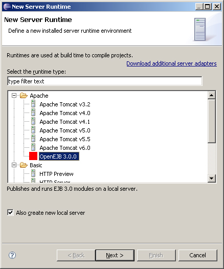
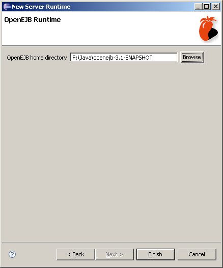

The OpenEJB Eclipse plugin provides support for running OpenEJB as a standalone server in Eclipse using WTP.
To setup a server, first of all, you will need to have a copy of OpenEJB extracted on your machine. Once you have that, the next step is to set up a runtime.
To set up a new runtime, click on Window, Preferences, and select Installed Runtimes under the Server category. Click the Add button.
Select OpenEJB 3.0.0 from the Apache category, and click next. If you choose to 'also create a new server' on this panel, you can add a server straight after configuring the runtime.
Browse to, or enter the path to your copy of OpenEJB. Click on Finish.